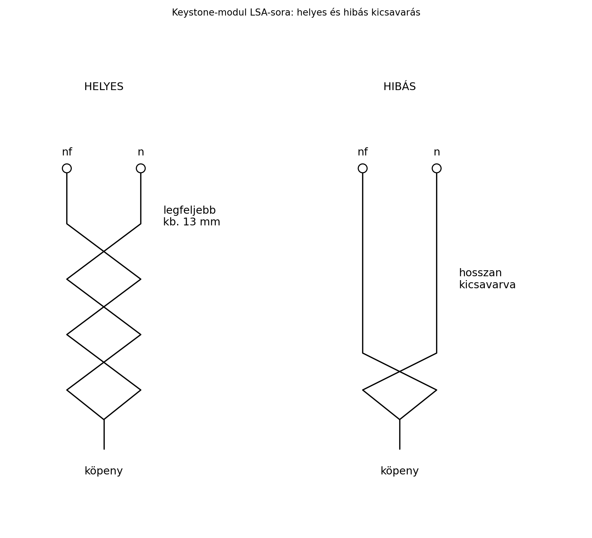

14.3.1 Gyakorlati útmutató: fali
adataljzat és patchpanel bekötése
Az épületben a fix (falban futó) kábel nem dugóba, hanem a
fali adataljzat és a patchpanel
késérintkezős (LSA, vágókéses) sorába vagy szerszám nélküli
keystone-modulba kerül. Az ér szigetelését az érintkező
vágja át, ezért nem kell csupaszolni.
Biztonsági korlát. A feladat tanműhelyi környezetre
vagy oktatói felügyeletre vonatkozik. Ha a közös csatorna vagy doboz
közelében erősáramú kör fut, azt előbb feszültségmentesíteni kell az öt
biztonsági szabály szerint: 1. lekapcsolás; 2. visszakapcsolás elleni
biztosítás; 3. feszültségmentesség ellenőrzése; 4. földelés és rövidre
zárás; 5. a szomszédos feszültség alatti részek lefedése.
Eszközök: köpenylehúzó, LSA-vágókés (vagy a modulhoz
tartozó szerszám), oldalcsípő, kábelteszter hosszméréssel, jelölőcímkék,
a modul és a panel gyártói útmutatója.
Hagyj szervizhurkot, majd a köpenyt a gyártó által megadott hosszon
távolítsd el, az ereket nem sértve.
A párok csavarását a kapocsig tartsd meg: legfeljebb kb. 13 mm
kicsavarás (ellenőrizendő: gyártói utasítás, szabvány).
Az ereket a modulra nyomtatott T568B színkód
szerint fektesd a villákba. Figyelem: a modulon gyakran az A és a B
kiosztás színsora is rajta van.
A vágókést merőlegesen, a vágóéllel a kilógó vég
(külső oldal) felé tartva nyomd be; fordítva a bekötött eret vágod
el.
Árnyékolt rendszernél az árnyékolást a gyártó szerint, körben
csatlakoztasd; tedd fel a porvédőt vagy a tehermentesítőt.
Pattintsd be a modult, és jelöld a kábelt és a portot mindkét végén
azonosan (például NET-03).
Mérés: a permanent linket mindkét végén
patchkábellel kapcsolt teszterrel vizsgáld: folytonosság, sorrend,
párcsere, szakadás, zárlat, hossz (legfeljebb 90 m). Az egyszerű teszter
nem minősíti a kategóriát; az minősítő műszer feladata (ellenőrizendő:
MSZ EN 50173, MSZ EN 50346).

Keystone-modul LSA-sora: helyes és hibás
kicsavarás - Egy pár (nf = narancs-fehér, n = narancs) a modul két
késérintkezőjében. Bal: a csavarás a kapocsig megmarad. Jobb: hosszan
kicsavart, párhuzamos erek – áthallás, a minősítő mérés
megbukhat.
Tipikus hibák: hosszan kicsavart pár; az A és a B
színsor keverése a modul két jelölése miatt; fordítva tartott vágókés;
élesen megtört vagy túlhúzott, szorosan kötegelt kábel; adatkábel 230
V-os vezetékkel közös dobozban elválasztás nélkül.
14.3.2 Gyakorlati útmutató
Cél: Készítsünk egy 5 m hosszú UTP-kábelt
RJ45-csatlakozóval a T568B szabvány szerint, és ellenőrizzük
kábelteszterrel.
Eszközök és anyagok: UTP Cat5e vagy jobb minőségű
kábel, RJ45-csatlakozó (csavart érpárhoz), lehúzó, krimpelő fogó,
kábelteszter, jelölőcímke.
Biztonsági korlát. A feladat tanműhelyi
(törpefeszültségű) környezetre vagy jogosult oktató felügyeletére
vonatkozik; hálózati feszültségen önállóan ne végezd. Ha a hálózati
eszköz 230 V-os táplálásához nyúlsz, azt csak jogosult személy kötheti
le, a hatályos előírások szerint.
Az öt biztonsági szabályt itt is be kell tartani, ha a hálózati
készülékek tápellátását vagy a környező erősáramú szerelést
érintjük:
Lekapcsolás: a környezetben lévő hálózati feszültségű áramköröket és
a PoE-tápláló eszközöket lekapcsoljuk.
Visszakapcsolás elleni biztosítás: a leválasztókat letiltjuk, hogy
senki se kapcsolhassa vissza.
Feszültségmentesség ellenőrzése: megfelelő feszültségvizsgálóval
győződjünk meg arról, hogy a hálózati részeken nincs feszültség.
Földelés és rövidre zárás: csak hálózati feszültségű berendezésen,
ott is szabályosan.
Szomszédos, feszültség alatt maradt részek lefedése: a feszültség
alatt lévő kapcsokat, síneket takarjuk le.
Lépések:
Mérd ki a szükséges kábelhosszt, hagyva 10–15 cm tartalékot a
csatlakozók kialakításához.
A kábel mindkét végéről óvatosan, 25–30 mm hosszan távolítsd el a
külső köpenyt; a belső erek szigetelése sértetlen maradjon.
Vágd egyenesre a sorba rendezett ereket úgy, hogy a köpenytől mérve
13–15 mm hosszúak legyenek.
Told be az ereket az RJ45-csatlakozóba; a kilincs lefelé nézzen, a
köpeny érjen be a tehermentesítőig.
Ellenőrizd a csatlakozó elejét: mind a 8 ér elérje az érintkezőt, és
a színsorrend ne csússzon el.
Krimpeld meg a csatlakozót az erre való fogóval, majd ugyanezt
végezd el a kábel másik végén.
Teszteld a kábelt: a kábeltesztert a két végére csatlakoztatva az
1–8 LED-ek sorban világítsanak. A főegység és a távadó oldalán azonos
sorszámnak kell világítania.
Ellenőrzési pontok:
A T568B színsorrend mindkét végén azonos.
A kábelköpeny beér a csatlakozó tehermentesítő részébe.
A krimpelés után nincs szabadon kilógó ér, és a csatlakozó nem
mozog.
A teszter nem mutat szakadást, zárlatot vagy párkeresztezést.
Tipikus hibák a bekötés során:
Túl hosszúra lecsupaszított kábel miatt a párok nem érnek el az
érintkezőkig.
A párok sorrendje elcsúszik, például a kék és a zöld pár
felcserélődik.
A csatlakozót rossz irányból krimpelve az érintkezők nem hatolnak a
szigetelésbe.
Az erek a csatlakozó tövében eltörnek, ha a kábelt élesen
visszahajtják.
Dokumentálás: A kész kábel mindkét végére azonos
jelölőcímkét helyezzünk el, például NET-001. A patchpanel
és a munkahelyi aljzat bekötésekor a rajzon tüntessük fel a kábel
azonosítóját és a hálózati eszköz portját.
14.3.3 Önellenőrzés
Mi a különbség a router és a switch feladata között?
Sorold fel a T568B színsorrendet a kábel 1–8 erei szerint.
Mi a hálózati cím és a broadcast-cím a 192.168.1.37/24
IP-cím esetén, és hány hoszt használható?
Mire való a PoE, és miért kell ismerni a fogyasztó
teljesítményigényét?
Mi a maximális engedélyezett hossza egy UTP-alapú állandó linknek
(fix szakasznak)?
14.3.4 Feladatok
1. feladat (A) Sorolj fel legalább három hálózati
topológiát, és mondd meg, melyik a legelterjedtebb a modern
Ethernet-hálózatokban.
2. feladat (A) Milyen eszközt használunk az azonos
hálózaton belüli eszközök összekapcsolására, és melyik irányítja a
hálózatok közötti forgalmat?
3. feladat (B) Egy eszköz IP-címe
172.16.5.100/20. Számítsd ki a hálózati címet, a
broadcast-címet, és határozd meg a használható hosztok számát.
4. feladat (B) Rajzold le vagy írd le egy kis iroda
hálózatának bekötési tervét: szolgáltatói csatlakozás, router, 8 portos
PoE switch, két PC, egy Wi-Fi AP és egy PoE IP-kamera.
5. feladat (C) Egy 8 portos PoE switch minden portja
legfeljebb 15,4 W-tal táplál. A portokra csatlakoztatott eszközök: 4
kamera egyenként 7 W, 1 Wi-Fi AP 10 W, 3 IP-telefon egyenként 3 W. A
switch teljes PoE-kerete 65 W. Elfér-e a rendszer a switch
teljesítménykeretén belül? Indokold számítással, osztály szerinti
foglalással is (IEEE 802.3af: 1. osztály 4,0 W, 2. osztály 7,0 W, 3.
osztály 15,4 W a switch oldalán; a készüléknek 3,84 W, 6,49 W, illetve
12,95 W áll rendelkezésére).
6. feladat (D) Egy kábelteszter az 1–8 LED-ek közül
a 3–6 párokat fordított sorrendben mutatja. Mi lehet a hiba, és hogyan
javítanád?
7. feladat (D) Egy KNX IP-interfész címe
192.168.1.20/24, a közvetlenül ugyanarra a switchre kötött
laptopé 192.168.0.15/24. A link LED-ek égnek, a laptop
mégsem éri el az interfészt. Miért, és mit teszel?
14.3.5 Önellenőrzés – válaszok
Switch: hálózaton belül MAC-cím alapján kapcsol; router: hálózatok
között IP-cím alapján irányít (DHCP, NAT).
Hálózati cím 192.168.1.0, broadcast 192.168.1.255, 254 használható
hoszt.
Adat és táp egy kábelen; ha az igény meghaladja a port vagy a switch
keretét, az eszköz nem indul vagy újraindul.
90 m (a csatorna a patchkábelekkel együtt 100 m).
14.3.6 Megoldások
1. feladat
Busz, gyűrű, csillag és fa topológia. A modern Ethernet-hálózatokban
a csillag topológia a legelterjedtebb, amelyet nagyobb
hálózatok esetén fa topológiává bővítenek.
2. feladat
Az azonos hálózaton belüli eszközöket switch köti
össze; a hálózatok közötti forgalmat router
irányítja.
3. feladat
Adott: IP-cím 172.16.5.100, maszk /20, azaz
255.255.240.0.
A maszkból: az első 20 bit hálózat, a maradék 12 bit hoszt. Az IP-cím
binárisan:
bitenkénti ÉS →
10101100.00010000.00000000.00000000
Visszaalakítva: 172.16.0.0, ez a hálózati
cím.
A broadcast-címhez a hosztbiteket 1-re állítjuk. A harmadik oktettben
a maszk utolsó 4 bitje a hoszt része: 0000 →
1111, tehát 172.16.15.255. A
broadcast-cím: 172.16.15.255.
A használható hosztok száma:
Tehát a tartomány 172.16.0.1 –
172.16.15.254.
4. feladat
A kapcsolási terv leírása:
A szolgáltatói csatlakozás a router WAN-portjára
csatlakozik.
A router LAN-portjára egy 8 portos PoE switch
csatlakozik.
A switch portjaira: PC1, PC2, Wi-Fi AP és IP-kamera.
Az IP-kamera PoE-t kap a switch portjától, ezért külön tápegység nem
kell.
A Wi-Fi AP-t is a switchre kötjük UTP-kábellel; a tápellátás vagy
PoE-ből, vagy külön adapterből történik.
Az IP-címzést a router DHCP-kiszolgálója osztja ki, kivéve, ha a
kamerának fix címet adunk.
5. feladat
A fogyasztók teljes igénye:
A switch teljes PoE-kerete 65 W, ez kisebb, mint a nyolc port
névleges összege
(
W), tehát a keretet kell a fogyasztók igényével összevetni.
Tényleges igény szerint a fogyasztók összesen 47 W-ot vesznek fel
(kábelveszteséggel ennél kicsit többet). Osztály szerinti foglalásnál a
switch a készülék PoE-osztályához rendel teljesítményt: a 7 W-ot igénylő
kamera meghaladja a 2. osztály 6,49 W-os fogyasztói határát, ezért 3.
osztályú, és 15,4 W-ot foglal; az AP is 3. osztályú (15,4 W); a 3 W-os
telefon 1. osztályú (4,0 W). Az osztályos foglalás:
Válasz: osztály szerinti foglalással a rendszer nem fér el a 65 W-os
keretben. Ha a switch és az eszközök LLDP-alapú (a tényleges igény
szerinti) teljesítmény-egyeztetést támogatnak, a kb. 47 W igény és a
kábelveszteség elférhet (ellenőrizendő: switch adatlapja, IEEE
802.3 osztályok). A példa azt tanítja, hogy nemcsak a
portonkénti teljesítményt, hanem a készülék teljes PoE-keretét és a
foglalási módot is ellenőrizni kell.
6. feladat
Ha a teszter 3→6 és 6→3 kapcsolatot mutat, az egyik végen a zöld pár
két ere (zöld-fehér és zöld) fel van cserélve. T568A/B keveredésnél
ezzel szemben az 1↔︎3 és 2↔︎6 keresztezés látszik (két pár cseréje).
Javítás: bontsuk le a hibás csatlakozót, rendezzük az ereket mindkét
végén T568B szerint, krimpeljük újra, és teszterrel
ellenőrizzük, hogy az 1–8 LED-ek sorban, párban világítanak.
7. feladat
A két eszköz más alhálózatban van: /24 maszkkal az interfész hálózata
192.168.1.0, a laptopé 192.168.0.0. A switch
nem végez útválasztást, ezért útválasztó nélkül nem érik el egymást.
Megoldás: a laptop címét 192.168.1.x/24-re állítod (szabad,
a címzési táblázat szerint ki nem osztott cím, nem a .20),
majd ping 192.168.1.20; a munka végén visszaállítod a
laptop eredeti beállítását.
14.3.7 IP-cím, maszk, kapu – példák
és gyakorlók
Példa. Legyen a készülék IP-címe
192.168.1.37/24, az átjáró 192.168.1.1. A
maszk 255.255.255.0. A bitenkénti ÉS művelet:
eredmény → 11000000.10101000.00000001.00000000 =
192.168.1.0
Tehát a hálózati cím 192.168.1.0. A hálózatban a hosztok
a 192.168.1.1 – 192.168.1.254 tartományt
használhatják, a 192.168.1.255 a
broadcast-cím, amely minden készülékhez szól. A
használható hosztok számát a maszk határozza meg:
ahol
a maszk hossza, például /24 esetén
.
A kettőt a hálózati cím és a broadcast-cím miatt vonjuk le.
Gyakorló: IP-címzés feladatgenerátorral. A nem
oktethatáros maszkok (/25–/29) a leggyakoribb hibaforrások, ezeket
érdemes sok feladaton begyakorolni. Az alábbi generátor véletlen
magánhálózati címet és prefixet ad; neked a maszkot, a hálózati és a
broadcast-címet, a használható tartományt és a hosztszámot kell beírnod,
a C szinten azt is eldöntened, hogy az eszköz egy alhálózatban van-e az
átjáróval. A nyomtatott kiadásban a mintakártya és a lenti rögzített
feladatsor megoldókulccsal helyettesíti.
Oldd meg előbb a feladatsort papíron, és csak utána nézd meg a
kulcsot. Tipikus hiba, ha a hosztszámnál elmarad a −2, vagy ha /24-nél
rövidebb prefixnél csak az utolsó oktettet írod 255-re a
broadcastban.
Rögzített feladatsor. Tíz címszámítási feladat (A:
/24, B: nem oktethatáros prefix) és egy átjáró-feladat (C); a
megoldókulcs a sor végén.
(A) Egy eszköz címe 192.168.10.77/24. Add meg a
maszkot pontozott alakban, a hálózati címet, a broadcast-címet és a
használható hosztcímek számát!
(B) Egy eszköz címe 192.168.1.130/25. Add meg a
maszkot pontozott alakban, a hálózati címet, a broadcast-címet, az első
és az utolsó használható címet és a használható hosztcímek számát!
(B) Egy eszköz címe 10.20.30.200/26. Add meg a
maszkot pontozott alakban, a hálózati címet, a broadcast-címet, az első
és az utolsó használható címet és a használható hosztcímek számát!
(B) Egy eszköz címe 172.16.40.5/22. Add meg a
maszkot pontozott alakban, a hálózati címet, a broadcast-címet, az első
és az utolsó használható címet és a használható hosztcímek számát!
(B) Egy eszköz címe 192.168.0.99/27. Add meg a
maszkot pontozott alakban, a hálózati címet, a broadcast-címet, az első
és az utolsó használható címet és a használható hosztcímek számát!
(B) Egy eszköz címe 10.0.5.18/28. Add meg a maszkot
pontozott alakban, a hálózati címet, a broadcast-címet, az első és az
utolsó használható címet és a használható hosztcímek számát!
(B) Egy eszköz címe 172.20.100.250/23. Add meg a
maszkot pontozott alakban, a hálózati címet, a broadcast-címet, az első
és az utolsó használható címet és a használható hosztcímek számát!
(B) Egy eszköz címe 192.168.50.65/26. Add meg a
maszkot pontozott alakban, a hálózati címet, a broadcast-címet, az első
és az utolsó használható címet és a használható hosztcímek számát!
(B) Egy eszköz címe 10.1.2.3/16. Add meg a maszkot
pontozott alakban, a hálózati címet, a broadcast-címet, az első és az
utolsó használható címet és a használható hosztcímek számát!
(B) Egy eszköz címe 192.168.3.14/29. Add meg a
maszkot pontozott alakban, a hálózati címet, a broadcast-címet, az első
és az utolsó használható címet és a használható hosztcímek számát!
(C) Egy eszköz beállítása: 192.168.1.130/25,
alapértelmezett átjáró 192.168.1.1. Mi az eszköz hálózati címe, és
működhet-e ezzel az átjáróval?
Megoldókulcs.
A rögzített feladatsor megoldókulcsa
Feladat
Szint
Eredmény
1.
A
maszk = 255.255.255.0; hálózati cím = 192.168.10.0; broadcast =
192.168.10.255; hosztok száma = 254
2.
B
maszk = 255.255.255.128; hálózati cím = 192.168.1.128; broadcast =
192.168.1.255; első használható = 192.168.1.129; utolsó használható =
192.168.1.254; hosztok száma = 126
3.
B
maszk = 255.255.255.192; hálózati cím = 10.20.30.192; broadcast =
10.20.30.255; első használható = 10.20.30.193; utolsó használható =
10.20.30.254; hosztok száma = 62
4.
B
maszk = 255.255.252.0; hálózati cím = 172.16.40.0; broadcast =
172.16.43.255; első használható = 172.16.40.1; utolsó használható =
172.16.43.254; hosztok száma = 1022
5.
B
maszk = 255.255.255.224; hálózati cím = 192.168.0.96; broadcast =
192.168.0.127; első használható = 192.168.0.97; utolsó használható =
192.168.0.126; hosztok száma = 30
6.
B
maszk = 255.255.255.240; hálózati cím = 10.0.5.16; broadcast =
10.0.5.31; első használható = 10.0.5.17; utolsó használható = 10.0.5.30;
hosztok száma = 14
7.
B
maszk = 255.255.254.0; hálózati cím = 172.20.100.0; broadcast =
172.20.101.255; első használható = 172.20.100.1; utolsó használható =
172.20.101.254; hosztok száma = 510
8.
B
maszk = 255.255.255.192; hálózati cím = 192.168.50.64; broadcast =
192.168.50.127; első használható = 192.168.50.65; utolsó használható =
192.168.50.126; hosztok száma = 62
9.
B
maszk = 255.255.0.0; hálózati cím = 10.1.0.0; broadcast =
10.1.255.255; első használható = 10.1.0.1; utolsó használható =
10.1.255.254; hosztok száma = 65 534
10.
B
maszk = 255.255.255.248; hálózati cím = 192.168.3.8; broadcast =
192.168.3.15; első használható = 192.168.3.9; utolsó használható =
192.168.3.14; hosztok száma = 6
11.
C
az eszköz hálózata = 192.168.1.128; működik az átjáró = nem
Kidolgozott megoldások.
/24: az első 24 bit a hálózat, a maradék 8 bit a hoszt; maszk =
255.255.255.0.
Kritikus oktett (4.): 77 = 010011012, maszk 0 =
000000002 → ÉS: 000000002 = 0.
Hálózati cím = cím ÉS maszk = 192.168.10.0 (a hosztbitek 0-k).
Broadcast = a hosztbitek mind 1-ek: 192.168.10.255; használható
tartomány: 192.168.10.1 – 192.168.10.254.
Hosztszám = 28 − 2 = 254 (a hálózati cím és a broadcast nem
adható ki).
/25: az első 25 bit a hálózat, a maradék 7 bit a hoszt; maszk =
255.255.255.128.
Kritikus oktett (4.): 130 = 100000102, maszk 128 =
100000002 → ÉS: 100000002 = 128.
Hálózati cím = cím ÉS maszk = 192.168.1.128 (a hosztbitek 0-k).
Broadcast = a hosztbitek mind 1-ek: 192.168.1.255; használható
tartomány: 192.168.1.129 – 192.168.1.254.
Hosztszám = 27 − 2 = 126 (a hálózati cím és a broadcast nem
adható ki).
/26: az első 26 bit a hálózat, a maradék 6 bit a hoszt; maszk =
255.255.255.192.
Kritikus oktett (4.): 200 = 110010002, maszk 192 =
110000002 → ÉS: 110000002 = 192.
Hálózati cím = cím ÉS maszk = 10.20.30.192 (a hosztbitek 0-k).
Broadcast = a hosztbitek mind 1-ek: 10.20.30.255; használható tartomány:
10.20.30.193 – 10.20.30.254.
Hosztszám = 26 − 2 = 62 (a hálózati cím és a broadcast nem
adható ki).
/22: az első 22 bit a hálózat, a maradék 10 bit a hoszt; maszk =
255.255.252.0.
Kritikus oktett (3.): 40 = 001010002, maszk 252 =
111111002 → ÉS: 001010002 = 40.
Hálózati cím = cím ÉS maszk = 172.16.40.0 (a hosztbitek 0-k).
Broadcast = a hosztbitek mind 1-ek: 172.16.43.255; használható
tartomány: 172.16.40.1 – 172.16.43.254.
Hosztszám = 210 − 2 = 1022 (a hálózati cím és a broadcast nem
adható ki).
/27: az első 27 bit a hálózat, a maradék 5 bit a hoszt; maszk =
255.255.255.224.
Kritikus oktett (4.): 99 = 011000112, maszk 224 =
111000002 → ÉS: 011000002 = 96.
Hálózati cím = cím ÉS maszk = 192.168.0.96 (a hosztbitek 0-k).
Broadcast = a hosztbitek mind 1-ek: 192.168.0.127; használható
tartomány: 192.168.0.97 – 192.168.0.126.
Hosztszám = 25 − 2 = 30 (a hálózati cím és a broadcast nem
adható ki).
/28: az első 28 bit a hálózat, a maradék 4 bit a hoszt; maszk =
255.255.255.240.
Kritikus oktett (4.): 18 = 000100102, maszk 240 =
111100002 → ÉS: 000100002 = 16.
Hálózati cím = cím ÉS maszk = 10.0.5.16 (a hosztbitek 0-k).
Broadcast = a hosztbitek mind 1-ek: 10.0.5.31; használható tartomány:
10.0.5.17 – 10.0.5.30.
Hosztszám = 24 − 2 = 14 (a hálózati cím és a broadcast nem
adható ki).
/23: az első 23 bit a hálózat, a maradék 9 bit a hoszt; maszk =
255.255.254.0.
Kritikus oktett (3.): 100 = 011001002, maszk 254 =
111111102 → ÉS: 011001002 = 100.
Hálózati cím = cím ÉS maszk = 172.20.100.0 (a hosztbitek 0-k).
Broadcast = a hosztbitek mind 1-ek: 172.20.101.255; használható
tartomány: 172.20.100.1 – 172.20.101.254.
Hosztszám = 29 − 2 = 510 (a hálózati cím és a broadcast nem
adható ki).
/26: az első 26 bit a hálózat, a maradék 6 bit a hoszt; maszk =
255.255.255.192.
Kritikus oktett (4.): 65 = 010000012, maszk 192 =
110000002 → ÉS: 010000002 = 64.
Hálózati cím = cím ÉS maszk = 192.168.50.64 (a hosztbitek 0-k).
Broadcast = a hosztbitek mind 1-ek: 192.168.50.127; használható
tartomány: 192.168.50.65 – 192.168.50.126.
Hosztszám = 26 − 2 = 62 (a hálózati cím és a broadcast nem
adható ki).
/16: az első 16 bit a hálózat, a maradék 16 bit a hoszt; maszk =
255.255.0.0.
Kritikus oktett (3.): 2 = 000000102, maszk 0 =
000000002 → ÉS: 000000002 = 0.
Hálózati cím = cím ÉS maszk = 10.1.0.0 (a hosztbitek 0-k).
Broadcast = a hosztbitek mind 1-ek: 10.1.255.255; használható tartomány:
10.1.0.1 – 10.1.255.254.
Hosztszám = 216 − 2 = 65534 (a hálózati cím és a broadcast
nem adható ki).
/29: az első 29 bit a hálózat, a maradék 3 bit a hoszt; maszk =
255.255.255.248.
Kritikus oktett (4.): 14 = 000011102, maszk 248 =
111110002 → ÉS: 000010002 = 8.
Hálózati cím = cím ÉS maszk = 192.168.3.8 (a hosztbitek 0-k).
Broadcast = a hosztbitek mind 1-ek: 192.168.3.15; használható tartomány:
192.168.3.9 – 192.168.3.14.
Hosztszám = 23 − 2 = 6 (a hálózati cím és a broadcast nem
adható ki).
Az eszköz hálózata: 192.168.1.130 ÉS 255.255.255.128 = 192.168.1.128
(broadcast 192.168.1.255).
Az átjáró (192.168.1.1) NEM esik ebbe a tartományba → az eszköz nem éri
el közvetlenül; a maszkot vagy az átjáró címét kell javítani.